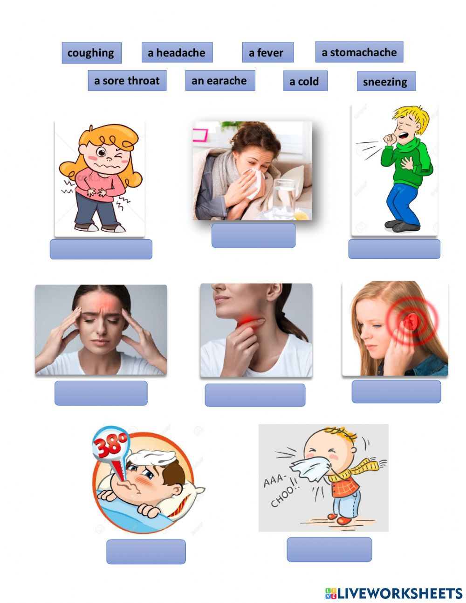

An unhealthy condition of the body or mind germs can cause illness.A specific sickness or disease colds are
a common illness 
Types of common illness Diseases
- Allergies
- Colds and Flu
- Conjunctivitis ("pink eye“)
- Diarrhea
- Headaches
- Mononucleosis
- Stomach Aches
Symptoms of Common Illness Diseases
- Eye irritation
- Runny nose
- Stuffy nose
- Puffy, watery eyes
- fever (100° F),
- headache,
- more intense pain and fatigue
- more severe, often dry cough.
- watery, loose stools
- frequent bowel movements
- cramping or pain in the abdomen, nausea, bloating
- possibly fever or bloody stools, depending on the cause
Preventing common illness Diseases
- Be aware of early symptoms so you can try to stop the headache as soon as it begins.
- Don’t smoke, and if you do, quit.
- Don’t skip meals.
- Avoid the outdoors between 5-10 a.m. and save outside activities for late afternoon or after a heavy rain, when pollen levels are lower.
- Keep windows in your living spaces closed to lower exposure to pollen.
- To keep cool, use air conditioners and avoid using window and attic fans.
- Wear a medical alert bracelet or other means to communicate to others about your allergy in case of a reaction.
- Wash your hands often (which is good advice for keeping healthy in any situation). Keep them away from your nose, eyes, and mouth. Use an instant hand sanitizer when you can’t wash your hands.
- Get regular exercise and eat well.
- Follow good sleep habits.
- Get a flu shot each fall (offered to all students at a lower cost by UHS each fall)
we need consult Primary care Doctor
Medicines
- Hydrocodone
- Metformin.
- Losartan.
- Antibiotics.
- Albuterol.
- Antihistamines.
- Gabapentin.
- Omeprazole.
previous
next